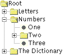
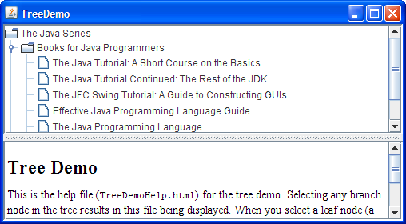
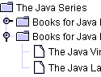
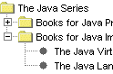
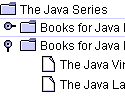
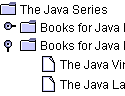
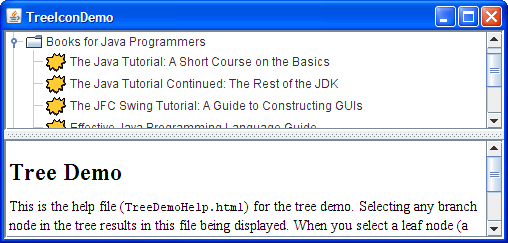
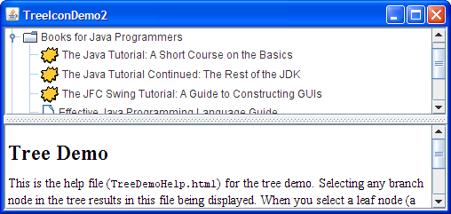
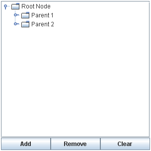
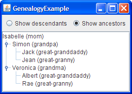

Lección: Usando Componentes Swing
Sección: Cómo Usar Varios Componentes
Cómo Usar Árboles
Con la clase
JTree, puede mostrar datos jerárquicos. Un objeto JTree en realidad no
contiene sus datos; simplemente ofrece una vista de los datos. Como cualquier otro componente de Swing
no trivial, el árbol obtiene los datos consultando su modelo de datos. Aquí tiene una foto de un árbol:

Como la figura precedente muestra, JTree visualiza sus datos verticalmente. Cada fila visualizada
por el árbol contiene exactamente un elemento de los datos, el cual es llamado nodo. Cada árbol tiene
un nodo raiz desde el cual todos los nodos descienden. Por defecto, el árbol muestra el nodo raiz,
pero puede decretar lo contrario. Un nodo puede tener hijos o no. Nos referimos a nodos que pueden tener
hijos — o no tienen actualmente hijos — como nodos de rama . Los nodos que no
pueden tener hijos son nodos hoja.
Los nodos de rama pueden tener cualqueir número de hijos. Habitualmente, el usuario puede expandir y colapsar los nodos de rama — haciendo a sus hijos visibles o invisibles — pulsándolos. Por defecto, todos los nodos de rama excepto el nodo raíz comienzan colapsados. Un programa puede detectar cambios en el estado de expansión de los nodos rama escuchando los eventos expansión o árbol-se-expandirá del árbol, como se describió en Cómo Escribir un Tree Expansion Listener y Cómo Escribir un Tree-Will-Expand Listener.
Un nodo específico en un árbol puede ser identificado o por un TreePath, un objeto que encapsula un nodo y todos sus ascendientes, o por su fila de visualización, donde cada fila en el área de visualización muestra un nodo.
- Un nodo expandido es un nodo no-hoja que mostrará sus hijos cuando todos sus ancestros se expandan.
- Un nodo colapsado es uno que los oculta.
- Un nodo oculto es uno que está bajo un ancestro colapsado.
El resto de esta sección describe los siguientes temas:
- Crear un Árbol
- Responder a la Selección del Nodo
- Personalizar la Visualización del Árbol
- Cambiar Dinámicamente un Árbol
- Crear un Modelo de Datos
- La IPA del Árbol
- Ejemplos que Usan Árboles
Crear un Árbol
Aquí tiene una foto de una aplicación, la mitad superior de la cual muestra un árbol en un panel de desplazamiento.

Pruebe esto:
-
Pulse el botón Lanzar para ejecutar el Tree Demo usando
Java™ Web Start
(
descargue KDJ 7 o posterior
). Alternativamente, para compilar y ejecutar usted mismo el ejemplo, consulte el
índice de ejemplos.

-
Expanda uno o más nodos.
Puede hacer esto pulsando el círculo a la izquierda del elemento. -
Colapse un nodo.
Haga esto pulsando el círculo a la izquierda de un nodo expandido.
El código siguiente, tomado de
TreeDemo.java, crea el objeto JTree y lo coloca en un panel de desplazamiento:
//Donde las variables de instancia son declaradas:
private JTree tree;
...
public TreeDemo() {
...
DefaultMutableTreeNode top =
new DefaultMutableTreeNode("La Serie Java");
createNodes(top);
tree = new JTree(top);
...
JScrollPane treeView = new JScrollPane(tree);
...
}
El código crea una instancia de
DefaultMutableTreeNode para servir como el nodo raíz para el árbol. Entonces crea el
resto de los nodos en el árbol. Después de eso, crea el árbol, especificando el nodo raíz como un argumento
al constructor JTree. Finalmente, coloca el árbol en un panel de desplazamiento, una táctica
común porque de lo contrario mostrar el árbol por completo, expandido requerería demasiado espacio.
Aquí está el código que crea los nodos bajo el nodo raíz:
private void createNodes(DefaultMutableTreeNode top) {
DefaultMutableTreeNode category = null;
DefaultMutableTreeNode book = null;
category = new DefaultMutableTreeNode("Libros para Programadores Java");
top.add(category);
//Tutorial original
book = new DefaultMutableTreeNode(new BookInfo
("El Tutorial de Java : Un Curso Corto Sobre Lo Básico",
"tutorial.html"));
category.add(book);
//Tutorial Continuado
book = new DefaultMutableTreeNode(new BookInfo
("El Tutorial de Java Continuado: El Resto del KDJ",
"tutorialcont.html"));
category.add(book);
//Tutorial de Swing
book = new DefaultMutableTreeNode(new BookInfo
("El Tutorial de Swing : Una Guía para Construir IGUs",
"swingtutorial.html"));
category.add(book);
//...agrega más libros para programadores...
category = new DefaultMutableTreeNode("Libros para Implementadores de Java");
top.add(category);
//MV
book = new DefaultMutableTreeNode(new BookInfo
("La Especificación de la Máquina Virtual de Java",
"vm.html"));
category.add(book);
//Especificación del Lenguaje
book = new DefaultMutableTreeNode(new BookInfo
("La Especificación del Lenguaje Java",
"jls.html"));
category.add(book);
}
El argumento al constructor DefaultMutableTreeNode es el objeto del usuario el cual es un
objeto que contiene o apunta a los datos asociados con el nodo del árbol. El objeto del usuario puede ser una
cadena, o puede ser un objeto personalizado. Si implementa un objeto personalizado, deberá implementar su
método toString de forma que devuelva la cadena a ser mostrada para ese nodo. JTree, por defecto,
renderiza cada nodo usando el valor devuelto por toString, así que es importante que toString
devuelva algo con sentido. Algunas veces, no es posible sobreescribir toString; en tal escenario
puede sobreescribir convertValueToText de JTree para asignar el objeto desde el modelo a una cadena que será
visualizada.
Por ejemplo, la clase BookInfo usada en el trozo de código previo es una clase personalizada que
contiene dos piezas de datos: el nombre de un libro, y la URL para el fichero HTML que describe el libro. El
método toString está implementado para devolver el nombre del libro. Así, cada nodo asociado con
un objeto BookInfo muestra un nombre de libro.
Nota: Puede especificar el formateado de texto en un nodo del árbol colocando etiquetas HTML en la caden para el nodo. Vea Usar HTML en Componentes Swing para más detalles.
Para resumir, puede crear un árbol invocando el constructor JTree, especificando la clase que
implementa TreeNode como un argumento. Debería probablemente colocar el árbol dentro de un panel de
desplazamiento, de forma que el árbol no ocupe mucho espacio. No tiene que hacer nada para hacer que los nodos
del árbol se expandan y colapsen en respuesta a los clics del usuario. Sin embargo, tiene que agregar algo de
código para hacer que el árbol responda cuando el usuario seleccione un nodo — haciendo clic en el nodo,
por ejemplo.
Responder a la Selección del Nodo
Responder a las selecciones del nodo del árbol es simple. Implemente un oyente de selección de árbol y
regístrelo al árbol. El código siguiente muestra el código relacionado con la selección del programa
TreeDemo:
//Donde el árbol se inicializa:
tree.getSelectionModel().setSelectionMode
(TreeSelectionModel.SINGLE_TREE_SELECTION);
//Escucha para cuando la selección cambia.
tree.addTreeSelectionListener(this);
...
public void valueChanged(TreeSelectionEvent e) {
//Devuelve el último elemento de la ruta de la selección.
//Este método es útil sólo cuando el modelo de selección permite una selección única.
DefaultMutableTreeNode node = (DefaultMutableTreeNode)
tree.getLastSelectedPathComponent();
if (node == null)
//Nada se selecciona.
return;
Object nodeInfo = node.getUserObject();
if (node.isLeaf()) {
BookInfo book = (BookInfo)nodeInfo;
displayURL(book.bookURL);
} else {
displayURL(helpURL);
}
}
El código precendente realiza estas tareas:
-
Obtiene el
TreeSelectionModelpor defecto para el árbol, y entonces lo configura para que se pueda seleccionar a lo sumo un nodo del árbol a la vez. -
Registra un manejador de evento para el árbol. El manejador de evento es un objeto que implementa el
interfaz
TreeSelectionListener. -
en el manejador del evento, se determina qué nodo es seleccionado al invocar el método
getLastSelectedPathComponentdel árbol. -
Use el método
getUserObjectpara obtener los datos asociados con el nodo.
Para más detalles sobre el manejo de los eventos de selección en el árbol, vea Cómo Escribir un Tree Selection Listener.
Personalizar la Visualización del Árbol
Aquí tiene una foto de algunos nodes de árbol, como son dibujados por las implementaciones de las apariencias Java, Windows, y Mac OS.
|  |  | |
| Apariencia Java | Apariencia Windows | Apariencia Mac OS |
Como las figuras precedentes muestran, un árbol muestra convencionalmente un icono y algo de texto para cada nodo. Puede personalizar estos, como mostraremos en breve.
Típicamente un árbol también realiza algún pintado específico de aspecto para indicar las relaciones entre
nodos. Puede personalizar este pintado de forma limitada. Primero, puede usar
tree.setRootVisible(true) para mostrar el nodo raíz o tree.setRootVisible(false) para
ocultarlo. Segundo, puede usar tree.setShowsRootHandles(true) para solicitar que los nodos
superiores de un árbol — el nodo raíz (si es visible) o sus hijos (si no lo es) — tengan
manejadores que les permitan ser expandidos o colapsados.
Si usted está usando la apariencia Java, puede personalizar si las líneas son dibujadas para mostrar las
relaciones entre los nodos del árbol . Por defecto, la apariencia Java dibuja líneas en angulo entre los nodos.
Al configurar la propiedad cliente JTree.lineStylede un árbol, puede especificar una convención
diferente. Por ejemplo, para solicitar que la apariencia Java use sólo líneas horizontales para agrupar los
nodos, use el código siguiente:
tree.putClientProperty("JTree.lineStyle", "Horizontal");
Para especificar que la apariencia Java no debe dibujar líneas, use este código:
tree.putClientProperty("JTree.lineStyle", "None");
Las capturas siguientes muestran los resultados de establecer la propiedad JTree.lineStyle, cuando
se usa la apariencia de Java.
|
 |
 |
|
"Angular" (por defecto) |
"Horizontal" |
"Ninguna" |
No importa que apariencia sea, el icono visualizado por defecto por un nodo está determinado por si el nodo es una hoja y, si no es así, si está expandido. Por ejemplo, en la implementación de las apariencias Widows y Motif, el icono por defecto para cada nodo hoja es un punto; en la apariencia Java, el icono por defecto para la hoja es un símbolo parecido a un papel. En todas las implementaciones de apariencia que hemos mostrado, los nodos de rama están marcados con símbolos de carpeta. Algunas apariencias podrían tener iconos distintos para las ramas expandidas que para las ramas colapsadas.
Puede fácilmente cambiar el icono por defecto usado para los nodos hoja, de ramas expandidas, o de ramas
colapsadas. Para hacerlo, cree primero una instancia de
DefaultTreeCellRenderer. Podría siempre crear su propia implementación de TreeCellRenderer
desde cero, reusando cualquier componente que le guste. A continuación, especifique los iconos a usar
invocando uno o más de los métodos siguientes en el renderizador: setLeafIcon (para nodos
hoja), setOpenIcon (para nodos rama expandidos), setClosedIcon (para nodos ramas
colapsados). Si quiere que el árbol no visualize el icono para un tipo de nodo, entonces especifique
null para el icono. Una vez que ha configurado los iconos, use el método
setCellRenderer del árbol para especificar que DefaultTreeCellRenderer pinte sus
nodos. Aquí tiene un ejemplo, tomado de
TreeIconDemo.java:
ImageIcon leafIcon = createImageIcon("images/middle.gif");
if (leafIcon != null) {
DefaultTreeCellRenderer renderer =
new DefaultTreeCellRenderer();
renderer.setLeafIcon(leafIcon);
tree.setCellRenderer(renderer);
}
Aquí está la captura de TreeIconDemo:

Pruebe esto:
-
Pulse el botón Lanzar para ejecutar el TreeIconDemo usando
Java™ Web Start (
descargue KDJ 7 o posterior
). Alternativamente, para compilar y ejecutar usted mismo el ejemplo, consulte el
índice de ejemplos.
Si quiere un control más fino sobre los iconos del nodo o quiere suministrar tool tips, puede hacerlo creando
una subclase de DefaultTreeCellRenderer y sobreescribiendo el método
getTreeCellRendererComponent. Ya que DefaultTreeCellRenderer es una subclase de
JLabel, puede usar cualquier método JLabel — tal como setIcon
— para personalizar a DefaultTreeCellRenderer.
El código siguiente, de
TreeIconDemo2.java
, crea un renderizador de celda que varía el icono hoja dependiendo de si la palabra "Tutorial"
es el texto del nodo. El renderizador también especifica el texto para la tool-tip, como muestran las líneas en
negrita.
Pruebe esto:
-
Pulse el botón Lanzar para ejecutar el TreeIconDemo2 usando
Java™ Web Start
(
descargue KDJ 7 o posterior
). Alternativamente, para compilar y ejecutar usted mismo el ejemplo, consulte el
índice de ejemplos.
//...donde el árbol está inicializado:
//Habilita las tool tips.
ToolTipManager.sharedInstance().registerComponent(tree);
ImageIcon tutorialIcon = createImageIcon("images/middle.gif");
if (tutorialIcon != null) {
tree.setCellRenderer(new MyRenderer(tutorialIcon));
}
...
class MyRenderer extends DefaultTreeCellRenderer {
Icon tutorialIcon;
public MyRenderer(Icon icon) {
tutorialIcon = icon;
}
public Component getTreeCellRendererComponent(
JTree tree,
Object value,
boolean sel,
boolean expanded,
boolean leaf,
int row,
boolean hasFocus) {
super.getTreeCellRendererComponent(
tree, value, sel,
expanded, leaf, row,
hasFocus);
if (leaf && isTutorialBook(value)) {
setIcon(tutorialIcon);
setToolTipText("Este libro están en las series del Tutorial.");
} else {
setToolTipText(null); //sin tool tip
}
return this;
}
protected boolean isTutorialBook(Object value) {
DefaultMutableTreeNode node =
(DefaultMutableTreeNode)value;
BookInfo nodeInfo =
(BookInfo)(node.getUserObject());
String title = nodeInfo.bookName;
if (title.indexOf("Tutorial") >= 0) {
return true;
}
return false;
}
}
Aquí está el resultado:

Usted se estará preguntando cómo funciona un renderizador de celdas. Cuando un árbol pinta cada nodo, ni
JTree ni su implementación específica de aspecto contiene en realidad el código que pinta el nodo.
En vez de eso, el árbol usa el código de pintado del renderizador de celdas para pintar el nodo. Por ejemplo,
para pintar un nodo hoja que tiene la cadena "El Lenguaje de Programación Java", el árbol pide a su
renderizador de celda que devuelva un componente que pueda pintar un nodo hoja con esa cadena. Si el
renderizador de celda es un DefaultTreeCellRenderer, entonces devuelve una etiqueta que pinta
el icono de hoja por defecto seguida de la cadena.
Un renderizador de celda sólo pinta; no puede manejar eventos. Si quiere agregar manejo de eventos a un árbol, necesita registra su manejador o sobre el árbol o, si el manejo ocurre sólo cuando se selecciona un nodo, el editor de celda del árbol. Para informarse sobre los editores de celda, vea Conceptos: Editores y Renderizadores. Esa sección describe los editores de celda de tabla y los renderizadores, los cuales son similares a los editores y renderizadores de células de árbol.
Cambiar Dinámicamente un Árbol
La siguiente figura muestra una aplicación llamada DynamicTreeDemo que le permite agregar nodos y eliminar nodos desde un árbol visible. Puede también editar el texto en cada nodo.

La aplicación está basada en un ejemplo suministrado el lector del tutorial Richard Stanford.
Pruebe esto:
-
Pulse el botón Lanzar para ejecutar el DynamicTreeDemo usando
Java™ Web Start
(
descargue KDJ 7 o posterior
). Alternativamente, para compilar y ejecutar usted mismo el ejemplo, consulte el
índice de ejemplos.
Aquí está el código que inicializa el árbol:
rootNode = new DefaultMutableTreeNode("Nodo Raíz");
treeModel = new DefaultTreeModel(rootNode);
treeModel.addTreeModelListener(new MyTreeModelListener());
tree = new JTree(treeModel);
tree.setEditable(true);
tree.getSelectionModel().setSelectionMode
(TreeSelectionModel.SINGLE_TREE_SELECTION);
tree.setShowsRootHandles(true);
Al crear explícitamente el modelo del árbol, el código garantiza que el modelo del arbol es una instancia de
DefaultTreeModel. De esta forma, conocemos todos los métodos que admite el modelo de árbol.
Por ejemplo, sabemos que podemos invocar el método del modelo insertNodeInto, incluso aunque
ese método no es requerido en la interfaz TreeModel.
Para hacer el texto en los nodo del árbol editable, invocamos setEditable(true) sobre el árbol.
Cuando el usuario ha finalizado de editar un nodo, el modelo genera un evento del modelo del arbol que le dice
a cualquier oyente — incluyendo el JTree — que los nodos del árbol han cambiado. Note
que aunque DefaultMutableTreeNode tiene métodos para cambiar el contenido de un nodo, los cambios
deben ir a través de los métodos de cubierta DefaultTreeModel. De otra forma, los eventos del
modelo de árbol no son generados, y los oyentes tales como el árbol no sabría sobre las actualizaciones.
Para ser notificado de los cambios del nodo, podemos implementar un
TreeModelListener. Aquí tiene un ejemplo de un oyente del modelo de árbol que detecta
cuando el usuario ha tecleado un nombre nuevo para un nodo de árbol:
class MyTreeModelListener implements TreeModelListener {
public void treeNodesChanged(TreeModelEvent e) {
DefaultMutableTreeNode node;
node = (DefaultMutableTreeNode)
(e.getTreePath().getLastPathComponent());
/*
* Si el evento muestra hijos, entonces el nodo
* cambiado es el hijo del nodo que ya hemos
* obtenido. De lo contrario, el nodo cambiado
* y el nodo especificado son los mismos.
*/
try {
int index = e.getChildIndices()[0];
node = (DefaultMutableTreeNode)
(node.getChildAt(index));
} catch (NullPointerException exc) {}
System.out.println("El usuario ha terminado de editar el nodo.");
System.out.println("Nuevo valor: " + node.getUserObject());
}
public void treeNodesInserted(TreeModelEvent e) {
}
public void treeNodesRemoved(TreeModelEvent e) {
}
public void treeStructureChanged(TreeModelEvent e) {
}
}
Aquí tiene el código que el manejador del evento del botón Añadir usa para agregar un nodo nuevo al árbol:
treePanel.addObject("New Node " + newNodeSuffix++);
...
public DefaultMutableTreeNode addObject(Object child) {
DefaultMutableTreeNode parentNode = null;
TreePath parentPath = tree.getSelectionPath();
if (parentPath == null) {
//No hay selección. Predeterminado al nodo raíz.
parentNode = rootNode;
} else {
parentNode = (DefaultMutableTreeNode)
(parentPath.getLastPathComponent());
}
return addObject(parentNode, child, true);
}
...
public DefaultMutableTreeNode addObject(DefaultMutableTreeNode parent,
Object child,
boolean shouldBeVisible) {
DefaultMutableTreeNode childNode =
new DefaultMutableTreeNode(child);
...
treeModel.insertNodeInto(childNode, parent,
parent.getChildCount());
//Asegúrese de que el usuario pueda ver el nuevo y encantador nodo.
if (shouldBeVisible) {
tree.scrollPathToVisible(new TreePath(childNode.getPath()));
}
return childNode;
}
El código crea un nodo, lo inserta dentro del modelo del árbol, y entonces, si es apropiado, solicita que los
nodos por encima se expandan y que el árbol se desplace de forma que el nodo nuevo sea visible. Para insertar
el nodo dentro del modelo, el código usa el método insertNodeInto suministrado por la clase
DefaultTreeModel.
Crear un Modelo de Datos
Si DefaultTreeModel no se ajusta a sus necesidades, entonces necesitará escribir un modelo de datos
personalizado. Su modelo de datos debe implementar el interfaz
TreeModel. TreeModel especifica métodos para obtener un nodo particular del
árbol, obtener el número de hijos de un nodo particular, determinar si un nodo es una hoja, notificar al modelo
de un cambio en el árbol, y añadir y eliminar oyentes al modelo de árbol.
Curiosamente, el interfaz TreeModel acepta cualquier clase de objeto como un nodo del árbol.
Esto no requiere que los nodos sean representados por objetos DefaultMutableTreeNode, o incluso
que esos nodos implementen el interfaz
TreeNode.
Así, si el interfaz TreeNode no es adecuado para su modelo de árbol , siéntase libre de idear
su propia representación para el árbol de nodos. Por ejemplo, si tiene una estructura de datos jerárquica
preexistente, no necesita duplicarla o forzarla al molde de TreeNode. Simplemente necesita
implemnetar su modelo de árbol de forma que use la información en la estructura de datos existente.
La siguiente figura muestra una aplicación llamada GenealogyExample que muestra los descendientes y ascendientes de una persona en particular. (Gracias al lector del tutorial Olivier Berlanger por ofrecernos este ejemplo).
Pruebe esto:
-
Pulse el botón Lanzar para ejecutar el ejemplo Genealogy usando
Java™ Web Start
(
descargue KDJ 7 o posterior
). Alternativamente, para compilar y ejecutar usted mismo el ejemplo, consulte el
índice de ejemplos.

Puede encontrar la implementación del modelo de árbol personalizado en
GenealogyModel.java. Ya que el modelo es implementado como una subclase de
Object en vez de, digamos, una subclase de DefaultTreeModel, debe implementar el
interfaz TreeModel directamente. Esto requiere implementar métodos para obtener información
sobre los nodos, tales como cuál es el raíz y cuales son los hijos de un nodo particular. En el caso de
GenealogyModel, cada nodo es representado por un objeto del tipo Person, una
clase personalizada que no implementa TreeNode.
Un modelo de árbol debe también implementar métodos para añadir y eliminar los oyentes del modelo de árbol, y
debe disparar TreeModelEvents a esos oyentes cuando la estructura del árbol o los datos cambien.
Por ejemplo, cuando el usuario ordena a GenealogyExample a cambiar de mostrar ascendientes a mostrar
descendientes, el modelo del árbol hace el cambio y entonces dispara un evento para informar a sus oyentes
(tales como componente del árbol).
Cómo Cargar a los Hijos de Forma Lenta
La carga lenta es una característica de una aplicación donde la carga real y la instanciación de una clase es retardada hasta el punto justo antes de que la instancia sea realmente utilizada.
¿Ganamos algo al cargarlos más tarde? Si, esto se sumaría definitivamente al rendimiento de una aplicación. Al cargar de forma lenta, puede dedicar los recursos de memoria a cargar e instanciar un objeto sólo cuando va a ser utilizado realmente. Puede también acelerar el tiempo de carga inicial de una aplicación.
Una de las formas en las que puede cargar más tarde los hijos de un Árbol es utilizando el interfaz TreeWillExpandListener. Por ejemplo, puede declarar y cargar el raíz, el abuelo y el padre de una árbol junto con la aplicación como se muestra en el código siguiente:
Vamos a declara la raíz, los abuelos y los padres como se muestra a continuación:
class DemoArea extends JScrollPane
implements TreeWillExpandListener {
.......
.......
private TreeNode createNodes() {
DefaultMutableTreeNode root;
DefaultMutableTreeNode grandparent;
DefaultMutableTreeNode parent;
root = new DefaultMutableTreeNode("San Francisco");
grandparent = new DefaultMutableTreeNode("Potrero Hill");
root.add(grandparent);
parent = new DefaultMutableTreeNode("Restaurants");
grandparent.add(parent);
dummyParent = parent;
return root;
}
Puede cargar los nodos declarados arriba al árbol como se muestra en el siguiente código:
TreeNode rootNode = createNodes();
tree = new JTree(rootNode);
tree.addTreeExpansionListener(this);
tree.addTreeWillExpandListener(this);
.......
.......
setViewportView(tree);
Ahora, puede cargar los hijos de forma perezosa en la aplicación siempre que el nodo principal
Restaurants esté visible en la aplicación. Para hacer esto, vamos a declarar dos hijos en un
método diferente y llamar a ese método como se muestra en el siguiente código:
private void LoadLazyChildren(){
DefaultMutableTreeNode child;
child = new DefaultMutableTreeNode("Thai Barbeque");
dummyParent.add(child);
child = new DefaultMutableTreeNode("Goat Hill Pizza");
dummyParent.add(child);
textArea.append(" Thai Barbeque and Goat Hill Pizza se ha cargado perezosamente");
}
.......
.......
public void treeWillExpand(TreeExpansionEvent e)
throws ExpandVetoException {
saySomething("Está a punto de expandir el nodo ", e);
int n = JOptionPane.showOptionDialog(
this, willExpandText, willExpandTitle,
JOptionPane.YES_NO_OPTION,
JOptionPane.QUESTION_MESSAGE,
null,
willExpandOptions,
willExpandOptions[1]);
LoadLazyChildren();
}
Vea Cómo Escribir un Tree-Will-Expand Listener para una descripción de los oyentes Tree-Will-Expand.
La IPA del Árbol
La IPA del árbol IPA es bastante extensa. Las tablas siguientes enumeran sólo un poco de las IPA, concentrándose en las categorías siguientes:
- Clases e Interfaces Relacionados con Árbol
- Crear y Configurar un Árbol
- Implementar la Selección
- Mostrar y Ocultar Nodos
Para más información sore la IPA del árbol, vea la documentación de la IPA para
JTree y para las distintas clases e interfaces en el
paquete del árbol. Consulte también La Clase JComponent para más
información de cómo la IPA de JTree hereda de su superclase.
| Clase o Interfaz | Propósito |
|---|---|
| JTree | El componente que presenta el árbol al usuario. |
| TreePath | Representa un camino a un nodo. |
|
TreeNode
MutableTreeNode DefaultMutableTreeNode |
Los interfaces que el modelo de árbol por defecto espera que sus nodos de árbol implementen, y la implementación usada por el modelo de árbol por defecto. |
|
TreeModel
DefaultTreeModel |
Respectivamente, el interfaz que un modelo de árbol debe implementar y la implementación utilizada usualmente. |
|
TreeCellRenderer
DefaultTreeCellRenderer |
Respectivamente, el intefaz que un renderizador de celdas de árbol debe implementar y la implementación usada usualmente. |
|
TreeCellEditor
DefaultTreeCellEditor |
Respectivamente, el interfaz que un editor de celda de árbol debe implementar y la implementación usada habitualmente. |
|
TreeSelectionModel
DefaultTreeSelectionModel |
Respectivamente, la interfaz que el modelo de selección del árbol debe implementar y la implementación usada habitualmente. |
|
TreeSelectionListener
TreeSelectionEvent |
La interfaz y el tipo de evento usado para detectar los cambios de selección del árbol. Para más información, vea Empezando. |
|
TreeModelListener
TreeModelEvent |
El interfaz y el tipo de evento usado para detectar los canbios del modelo del árbol. Para más información, vea Cómo Escribir un Tree Model Listener. |
|
TreeExpansionListener
TreeWillExpandListener TreeExpansionEvent |
Los interfaces y tipos de eventos usados para detectar las expansiones y colapsos de un árbol. Para más información, vea Cómo Escribir un Tree Expansion Listener y Cómo Escribir un Tree-Will-Expand Listener. |
| ExpandVetoException |
Una excepción que un TreeWillExpandListener puede lanzar para indicar que la expansión /
colapso inminente no debería ocurrir. Para más información, vea
Como Escribr un Tree-Will-Expand Listener.
|
| Constructor o Método | Propósito |
|---|---|
|
JTree(TreeNode)
JTree(TreeNode, boolean) JTree(TreeModel) JTree() JTree(Hashtable) JTree(Object[]) JTree(Vector) |
Crea un árbol. El argumento TreeNode especifica el nodo raíz, para ser administrado por el
modelo predeterminado de árbol. El argumento TreeModel especifica el modelo que suministra
los datos a la tabla. La versión sin argumentos de este constructor es para usarlo en constructores;
crean un árbol que contienen algunos datos de ejemplo. Si especifica un Hashtable, matriz
de objetos, o un Vector como un argumento, entonces el argumento es tratado como una lista
de nodos bajo el nodo raíz (el cual no es mostrado), y un modelo y nodos de árbol se construyen en
consecuencia.
El argumento |
| void setCellRenderer(TreeCellRenderer) | Establece el renderizador que dibuja cada nodo. |
|
void setEditable(boolean)
void setCellEditor(TreeCellEditor) |
El primer método establece si el usuario puede editar los nodos del árbol. Por defecto, los nodos del árbol no son editables. El segundo establece qué editor personalizado utilizar. |
| void setRootVisible(boolean) | Establece si el árbol muestra el nodo raíz. El valor por defecto es false si el árbol es creado usando uno de los constructores que toman una estructura de datos, y true de otra manera. |
| void setShowsRootHandles(boolean) |
Establece si el árbol muestra manejadores para sus nodos más a la izquierda, permitiéndole expandir y
colapsar los nodos. Por defecto es false. Si el árbol no muestra el nodo raíz, entonces debe invocar
setShowsRootHandles(true).
|
|
void setDragEnabled(boolean)
boolean getDragEnabled() |
Establece u obtiene la propiedad dragEnabled, la cual debe ser true para habilitar el
manejo del arrastre en este componente. El valor por defecto es false. Vea
Arrastrar y Soltar y Transferencia de
Datos para más detalles.
|
| Método | Propósito |
|---|---|
| void addTreeSelectionListener(TreeSelectionListener) | Registra un oyente para detectar cuándo un nodo es seleccionado o deseleccionado. |
|
void setSelectionModel(TreeSelectionModel)
TreeSelectionModel getSelectionModel() |
Establece u obtiene el modelo usado para controlar las selecciones de nodo. Puede apagar la selección
de nodos completamente usando setSelectionModel(null).
|
|
void setSelectionMode(int)
int getSelectionMode() (en TreeSelectionModel)
|
Establece u obtiene el modo de selección. El valor puede ser CONTIGUOUS_TREE_SELECTION,
DISCONTIGUOUS_TREE_SELECTION, o SINGLE_TREE_SELECTION (todos definidos en
TreeSelectionModel).
|
| Object getLastSelectedPathComponent() |
Obtiene el objeto que representa el nodo actualmente seleccionado. Esto es equivalente a invocar
getLastPathComponent sobre el valor devuelto por tree.getSelectionPath().
|
|
void setSelectionPath(TreePath)
TreePath getSelectionPath() |
Establece u obtiene la ruta al nodo seleeccionado actualmente. |
|
void setSelectionPaths(TreePath[])
TreePath[] getSelectionPaths() |
Establece u obtiene los caminos a los nodos seleccionados actualmente. |
|
void setSelectionPath(TreePath)
TreePath getSelectionPath() |
Establece u obtiene el camino al nodo seleccionado actualmente. |
| Método | Propósito |
|---|---|
|
void addTreeExpansionListener(TreeExpansionListener)
void addTreeWillExpandListener(TreeWillExpandListener) |
Registra un oyente para detectar cuándo los nodos del árbol se han expandido o colapsado, o
serán expandidos o colapsados, respectivamente. Para vetar una expansión o colapso inminente,
un TreeWillExpandListener puede lanzar una ExpandVetoException.
|
|
void expandPath(TreePath)
void collapsePath(TreePath) |
Expande o colapsa el camino especificado del árbol. |
| void scrollPathToVisible(TreePath) | Se asegura que el nodo especificado por el camino es visible — que el camino que conduce a él se expande y el nodo se encuentra en el área de visualización del panel de desplazamiento. |
| void makeVisible(TreePath) | Se asegura que el nodo especificado por el camino es visible — que el camino que conduce a ella se expande. El nodo puede no terminar dentro del área de visualización. |
|
void setScrollsOnExpand(boolean)
boolean getScrollsOnExpand() |
Establece u obtiene si el árbol intenta desplazarse para mostrar nodos ocultos previamente. El valor por defecto es true. |
|
void setToggleClickCount(int)
int getToggleClickCount() |
Establece u obtiene el número de clics de ratón antes de que un nodo se vaya a expandir o a cerrar. Por defecto es dos. |
| TreePath getNextMatch(String, int, Position.Bias) |
Devuelve el TreePath al siguiente elemento del árbol que empieza con el prefijo específico.
|
Ejemplos que Usan Árboles
Esta tabla lista los ejemplos que usan JTree y dónde esos ejemplos están descritos.
| Ejemplo | Dónde Se Describe | Notas |
|---|---|---|
| TreeDemo | Crear un Árbol, Responder a la Selección del Nodo, Personalizar la Visualización del Árbol | Crea un árbol que responde a las selecciones del usuario. También tiene código para personalizar el estilo de línea para el aspecto Java. |
| TreeIconDemo | Personalizar la Visualización del Árbol | Añade un icono personalizado de hoja a TreeDemo. |
| TreeIconDemo2 | Personalizar la Visualización del Árbol | Personalizar ciertos iconos hoja y también suministra tool tips para ciertos nodos de árbol. |
| DynamicTreeDemo | Cambiar Dinámicamente un Árbol | Ilustra el añadido y eliminación de nodos de un árbol. También permite editar el texto de un nodo. |
| GenealogyExample | Crear un Modelo de Datos | Implementa un modelo personalizado de árbol y un tipo de nodo personalizado. |
| TreeExpandEventDemo | Cómo Escribir un Oyente de Expansión del Árbol | Muestra cómo detecta las expansiones y colapsos del nodo. |
| TreeExpandEventDemo2 | Cómo Escribir un Tree-Will-Expand Listener | Muestra cómo vetar expansiones de nodo. |
Si está programando en JavaFX, vea Vista de Árbol.